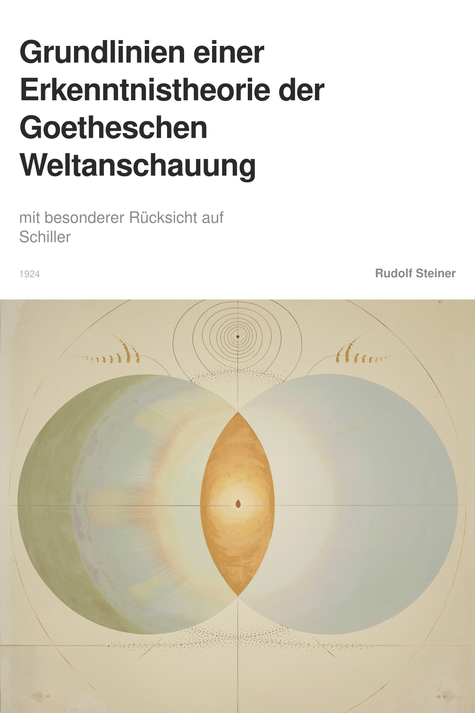
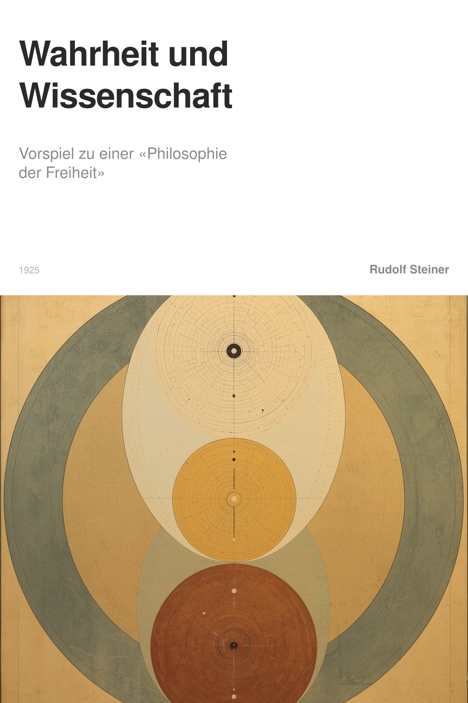
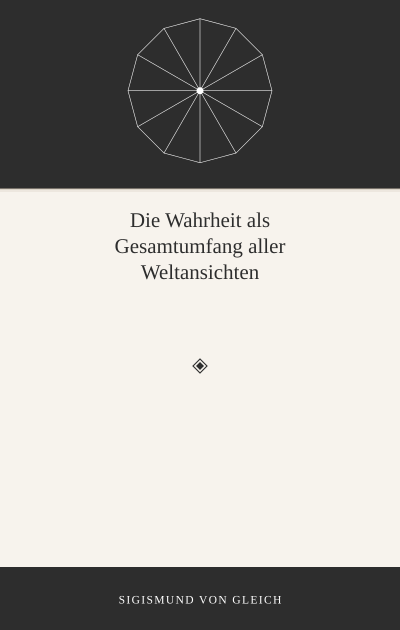

Mensch
Was sagst du zu Folgendem Satz: Steiner unterscheidet hier nicht zwischen zwei verschiedenen Arten von Gedankengebilden, sondern zwischen zwei Stufen ein und derselben Sache. Ein Begriff ist das ideelle Gegenstück zu einem einzelnen beobachteten Gegenstand – etwa der Begriff „Baum“, der zurückbleibt, wenn der Baum selbst nicht mehr gesehen wird. Eine Idee ist derselbe Vorgang, nur weiterentwickelt: Sie entsteht, wenn mehrere solcher Begriffe zu einem größeren, gesetzmäßigen Ganzen zusammengefasst werden [1].
Assistant Host
Ihre Unterscheidung zwischen Begriff und Idee als zwei Stufen ein und derselben Sache trifft einen wesentlichen Punkt, ist aber in dieser Formulierung nicht ganz präzise. Lassen Sie mich das an den Quellen klären.
Richtig ist: Steiner sieht Begriff und Idee nicht als zwei verschiedene Arten von Gedankengebilden, sondern als unterschiedliche Funktionen des Denkens. In der zitierten Quelle (Quelle 20: Grundlinien einer Erkenntnistheorie der Goetheschen Weltanschauung) heißt es: „Unser Denken hat eine zweifache Aufgabe zu vollbringen: erstens, Begriffe mit scharf umrissenen Konturen zu schaffen; zweitens, die so geschaffenen Einzelbegriffe zu einem einheitlichen Ganzen zusammenzufassen.“ Das sind zwei Tätigkeiten, die aufeinander aufbauen.
Ihr Beispiel mit dem „Baum“-Begriff als ideellem Gegenstück zu einem einzelnen Gegenstand ist insofern zutreffend, als der Begriff die geistige Form ist, die das Wahrgenommene in einen sinnvollen Zusammenhang bringt (Quelle 17: Liste von Begriffen). Die Idee geht darüber hinaus: Sie ist die „lebendige, wirkende Gesetzmäßigkeit, die der sinnlichen Erscheinungswelt zugrunde liegt“ (Quelle 19: Liste von Begriffen) – also nicht bloß die Summe mehrerer Begriffe, sondern das innere Gesetz, das sie verbindet.
Allerdings ist Ihre Formulierung, der Begriff sei das „ideelle Gegenstück zu einem einzelnen beobachteten Gegenstand“, zu eng. Steiner betont, dass Begriff und Wahrnehmung im Bewusstsein ursprünglich getrennt auftreten und erst durch die Tätigkeit des Erkennens verbunden werden (Quelle 1: Wahrheit und Wissenschaft). Der Begriff ist nicht einfach ein „Abdruck“ des Gegenstandes, sondern eine eigenständige geistige Leistung, die das Wahrgenommene erst verständlich macht (Quelle 4: Grundlinien einer Erkenntnistheorie der Goetheschen Weltanschauung).
Die entscheidende Nuance: Begriff und Idee sind nicht zwei Stufen derselben Sache, sondern zwei Aspekte derselben geistigen Tätigkeit – das unterscheidende und das verbindende Denken. Die Idee ist nicht einfach ein „weiterentwickelter Begriff“, sondern die Gesetzmäßigkeit, die mehrere Begriffe in einem lebendigen Zusammenhang organisiert.
[1]
[2]DIE PLATONISCHE WELTANSCHAUUNG
[3]
VI. DIE VORAUSSETZUNGSLOSE ERKENNTNISTHEORIE UND FICHTES WISSENSCHAFTSLEHRE
[4]
[5]gegenstand
Gegenstand
In der erkenntnistheoretischen Perspektive Rudolf Steiners ist der Gegenstand nicht einfach ein gegebenes, fertiges Ding. Er ist vielmehr dasjenige, was unserem erkennenden Bewusstsein zunächst als ein Fremdes und Äußeres gegenübersteht, als eine zusammenhanglose Summe von Sinneseindrücken. Für sich allein genommen bleibt diese Wahrnehmung ein chaotisches Nebeneinander; sie ist noch nicht der eigentliche Gegenstand.
Der wahre Gegenstand entsteht erst durch die tätige Leistung des Denkens. Unser Geist fügt der bloßen Wahrnehmung den begrifflichen Faktor hinzu, der ihr fehlt. Dieser Begriff ist jedoch nicht eine subjektive Erfindung, sondern er wird aus der Wirklichkeit des Wahrgenommenen selbst genommen. In der Erkenntnis vollzieht sich daher eine Vereinigung: Das im Denken wirkende Wesen des Menschen verbindet sich mit dem im Wahrgenommenen waltenden Wesen der Welt. Wir erzeugen den Gegenstand aktiv im Denken – nicht willkürlich, sondern in genauer Übereinstimmung mit seiner eigenen, in ihm liegenden Gesetzmäßigkeit.
Diese Auffassung ist tief von Steiners Goethe-Studien geprägt. Für Goethe war der natürliche Gegenstand, etwa die Pflanze, eine sich in der Erscheinung offenbarende Idee. Steiner überträgt dies grundsätzlich: Jeder Gegenstand ist eine in die Erscheinung getretene Idee. Ihn zu erkennen heißt, diese in ihm waltende Idee im eigenen Denken nachzuvollziehen und so die gesetzmäßige Verknüpfung von Wahrnehmung und Begriff herzustellen. Am Ende dieses Prozesses ist der Gegenstand nicht mehr ein bloß äußerlich Gegebenes, sondern ein innerlich durchdrungenes und verstandenes Glied der vollen Wirklichkeit.
[6]idee
Idee
Eine Idee ist kein bloßer Gedanke im Kopf und keine abstrakte Vorstellung. Sie ist vielmehr die lebendige, wirkende Gesetzmäßigkeit, die der sinnlichen Erscheinungswelt zugrunde liegt und sie durchdringt. Diese Gesetzmäßigkeit ist objektiv und geistig real; sie ist der schöpferische Urgrund, aus dem sich sowohl die Natur als auch die menschliche Erkenntnis entfalten.
Im menschlichen Denken wird dieselbe Gesetzmäßigkeit unmittelbar und in reiner Form erlebt. Das Denken ist daher die Sphäre, in der wir unmittelbar in der Ideenwelt tätig sind. Eine wahre Erkenntnis entsteht erst, wenn der vom Menschen hervorgebrachte Begriff – die erfasste Idee – mit einer sinnlichen Wahrnehmung zusammentrifft. In diesem Zusammenschluss wird die volle Wirklichkeit vermittelt. Ein Wahrnehmungsinhalt ohne sein ideelles Gegenstück bleibt eine Halbheit, ebenso wie ein abstrakter Begriff, der keine Entsprechung in der Wahrnehmung findet.
Damit widerlegt diese Auffassung sowohl den naiven Realismus, der nur die Wahrnehmung für wirklich hält, als auch jede Philosophie, die Ideen zu bloßen subjektiven Fiktionen oder Hilfskonstruktionen erklärt. Die Idee ist keine Hypothese über ein jenseitiges Objekt, sondern die im Denken unmittelbar erfahrbare, ordnende Kraft der Wirklichkeit selbst. Sie ist die wirkende Einheit von Gesetz und Leben.
[7]D. DIE WISSENSCHAFT
[8]
XIV. DER REALISMUS
[9]C. DAS DENKEN
[10]begriff
Begriff
Für Rudolf Steiner ist ein Begriff weit mehr als ein abstraktes gedankliches Etikett oder ein bloßes Hilfsmittel zur Ordnung von Wahrnehmungen. Er stellt vielmehr die lebendige, geistige Einheit dar, die sich dem denkenden Bewusstsein offenbart, wenn es eine Sache aktiv durchdringt. Im reinen Denken sind wir nicht passiv, sondern tätig; wir bringen Begriffe und Ideen aus der Tiefe unseres geistigen Wesens selbst hervor.
Damit sind Begriffe keine subjektiven Abbilder einer davon getrennten äußeren Wirklichkeit. Sie sind die eigentliche, unmittelbar erlebte Wirklichkeit, in der wir leben, wenn wir denken. Das sinnliche Phänomen allein ist nur die eine, unvollständige Hälfte der Wirklichkeit. Die andere, ergänzende Hälfte ist der sich in der geistigen Anschauung enthüllende Begriff. Erst beide zusammen – die wahrgenommene Erscheinung und der sie durchdringende, gesetzmäßige Gedanke – ergeben die volle Tatsache.
Der Begriff ist somit die ideelle, gesetzhafte Seite der Erscheinungswelt, die wir im aktiven Denken nicht erfinden, sondern vorfinden. Diese Auffassung überwindet die traditionelle Kluft zwischen Subjekt und Objekt, denn im begreifenden Denken begegnet das individuelle Ich unmittelbar der geistigen Ordnung der Welt selbst. Der Begriff verbindet uns daher direkt mit dem Wesen der Dinge und ist der Punkt, an dem erkennendes Bewusstsein und Weltgeschehen ineinanderwirken.